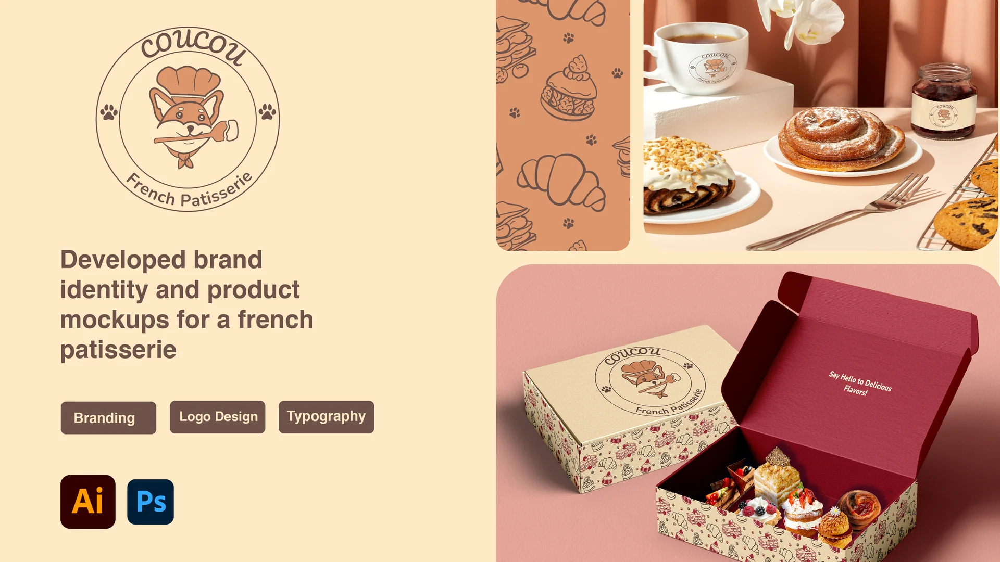

Brand identity, logo and product packaging for a French patisserie, developed in one month.
Role
Lead Designer
Timeline
April 2025
Focus
Branding, logo design, typography
Tools
Adobe Illustrator, Photoshop

01
Overview
Coucou is a French patisserie that needed branding plus product bags and boxes. Within a month, I further developed my skills in graphic design, illustration, logo design and branding.
02
Ideation
Which logo can you see on a pastry display window?
ArtisanSweetFrenchPlayful
"Coucou" is a casual hello in French, so I wanted the brand to feel playful and artisan. I began sketching logo ideas that captured these keywords and the brand messaging. My first two directions were sophisticated artisanal imagery and a playful, cute style. I researched existing bakeries and thought that incorporating pastry into the logo, or having an animal mascot, could be appealing.
After sketching my ideas, I sought feedback from potential customers.
03
Logo exploration
Round 01
The dog mascot wins, but it's hard to read
Out of my initial sketches, the dog mascot (with the star) was the most popular. Customers found it cute and could easily picture it on signs and pastry boxes. However, they found it hard to read because the pastry was part of the dog icon. So I began round two, further developing the dog character.
Round 01 · logo sketches with customer feedback · Open full size ↗
Round 02
From pastry-dog to chef
I researched different dog breeds and found Shiba Inus had an appealing shape. Incorporating pastry into the dog proved difficult, so to improve clarity I went with a playful chef character instead.
Round 02 · Shiba Inu chef explorations · Open full size ↗04
Brand identity
A polished logo, palette and type system.
The final logo mark places the Shiba Inu chef inside a circular badge with paw prints, framed by the Coucou wordmark and "French Patisserie." A standalone word mark covers places where the badge is too detailed.
Contrast test against the cream background · Open full size ↗
Accessibility
Practical, not just pretty
Once I had a palette in mind, I tested color contrast against WCAG 2.1 AA standards. Cocoa brown and raspberry pass as text on cream. Apricot and blush don't, so they're used for illustration fills and backgrounds rather than text.
Typography
Pacifico gives headers a friendly, hand-lettered feel, while Nunito Bold and Nunito Regular keep taglines and details easy to read.
While I couldn't incorporate pastry into the logo, I created a set of icons based on pastries and desserts: a mille-feuille, a croissant, a raspberry choux and a citrus tart. These icons also became a seamless pattern decorating the pastry bags and boxes.
Pastry icons and seamless patterns · Open full size ↗
05
Packaging & mockups
Bringing the brand to the pastry counter.
I applied the identity to take-away bags, a pastry box and tableware. The badge sits front and center, the pattern wraps the sides, and the box opens onto a raspberry interior that greets customers with "Say Hello to Delicious Flavors!"